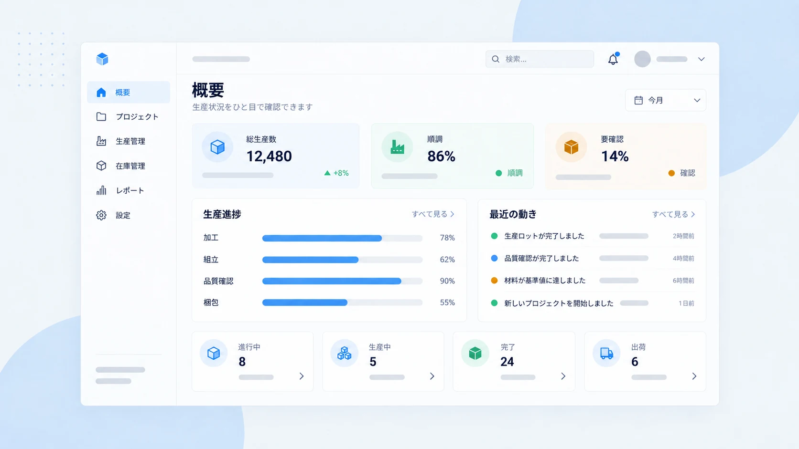

製造業向けの BtoB SaaS で、プロダクトデザインと情報設計を担当しています。図面から部品表（BOM）を取り込む業務を、AI で自動化するプロダクトです。開発中のため、詳細と実画面は非公開とさせていただきます。
ユーザーは、日本の中小製造業の現場担当者です。ソフトウェアに慣れた層ではありません。そして扱う情報は、間違えると発注ミスや生産停止につながるものです。
この2つの条件が、設計のすべてを決めました。
担当範囲
- 要件整理（PdM・エンジニアとの連携）
- ペルソナ設計、カスタマージャーニーマップ構築
- 情報設計・画面設計
- インタラクティブプロトタイプの構築
- Figma によるコンポーネント設計、デザインシステム構築・運用

1. 業務を分解してから、画面を考える
最初にやったのは、画面を描くことではなく、現場の仕事を工程に分解することでした。
図面を受け取ってから発注が完了するまでの流れを段階に区切って、as-is のジャーニーマップとして構築しました。どこで時間がかかっているのか、どこで判断が止まるのか、どこで確認の往復が発生しているのか。
この分解をやっておくと、画面の議論が「どの工程を助けるか」の議論になります。機能単位で話すと、あれば便利なものが際限なく増えていく。工程から入ると、何を作らないかを決められます。
現時点ではまだ仮説段階のマップです。分かっていることと、まだ推測でしかないことを分けて扱うようにしています。
2. AI の出力を、信用させない
このプロダクトの本質的な難しさは、AI が出した結果をユーザーが確認しなければならない点にあります。
AI は間違えます。にもかかわらず、画面上で断定的に表示されると、人は確認をやめます。業務システムにおいて、これは最も危険な状態です。特に、部品の型番や数量のように、間違いが後工程で発覚するデータではなおさらです。
そこで、全画面に共通する原則を3つ置きました。
| 原則 | 理由 |
|---|---|
| AI の出力は常に「下書き」として提示し、人の確認を必須とする | 確定情報に見せないことで、確認行為を設計に組み込む |
| データの鮮度をタイムスタンプで常時表示する | いつ時点の情報かが分からないまま判断されるのを防ぐ |
| 免責事項を全画面に配置する | 責任の所在を曖昧にしない |
AI を使うプロダクトの UI は、精度を見せる設計ではなく、精度が足りないときに人が気づける設計であるべきだと考えています。
自動化の価値は、人の判断をなくすことではなく、判断すべき箇所を絞ることにあります。
3. 複雑な情報を、迷わない形に落とす
設計・実装した画面のうち、考え方が表れている3つを挙げます（内容は概略にとどめます）。
- 取り込み画面 — 図面と抽出結果を左右に並べ、部品の項目にカーソルを合わせると図面側の該当箇所が連動して光る。どこから取った数字なのかを、見た目で確認できる状態にしました。確認作業の負荷は、ここでほとんど決まります
- レビュー画面 — AI の抽出結果を人が修正する画面。エラー箇所と確認が必要な箇所を明示的に区別し、全件を見直さなくても済むようにしています
- 階層表示画面 — 部品の親子関係をツリーで表示し、廃番リスクのある部品を可視化。階層が深くなっても現在地を見失わない構造にしています
いずれも HTML/CSS/JavaScript のインタラクティブプロトタイプとして実装しました。静止画では検証できない、ホバー連動や状態変化の挙動を確かめるためです。
並行して担当している領域
- BtoB 在庫管理 Web アプリ — 在庫から発注までを一元化する業務システムの UI 設計。短時間での操作を前提とした画面構成と、視認性・操作性の最適化
- BtoC 服薬管理アプリ — 複雑になりやすい服薬管理フローの情報優先度を再設計。操作ステップの簡略化
この領域で意識していること
業務システムの UI は、好みで評価されるものではありません。使う人が、迷わず、間違えずに、業務を終えられるかどうか。評価軸がそれしかない分、判断の理由を言葉にできることが求められます。
複雑な情報を整理して構造化することは、EC の商品ページでも、業務システムの画面でも、やっていることは変わりません。扱う情報の種類と、間違えたときの影響の大きさが違うだけです。